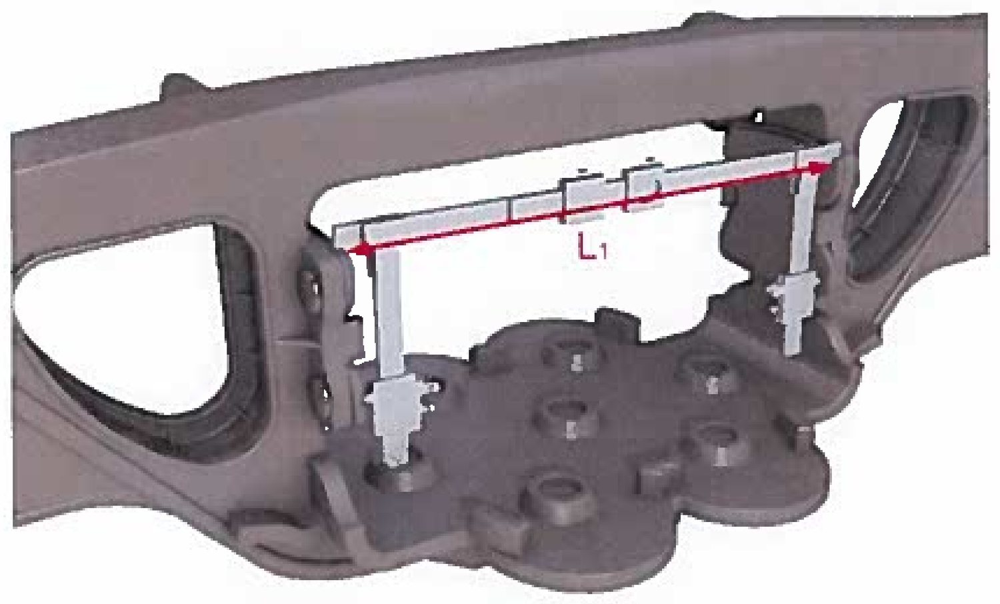
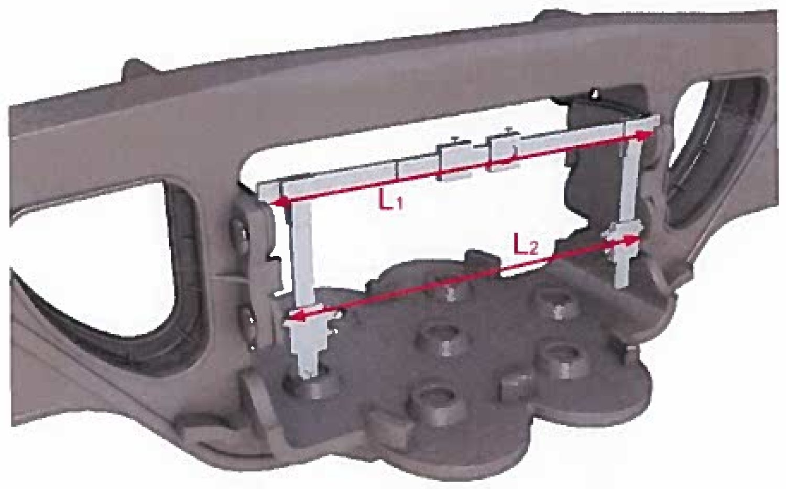
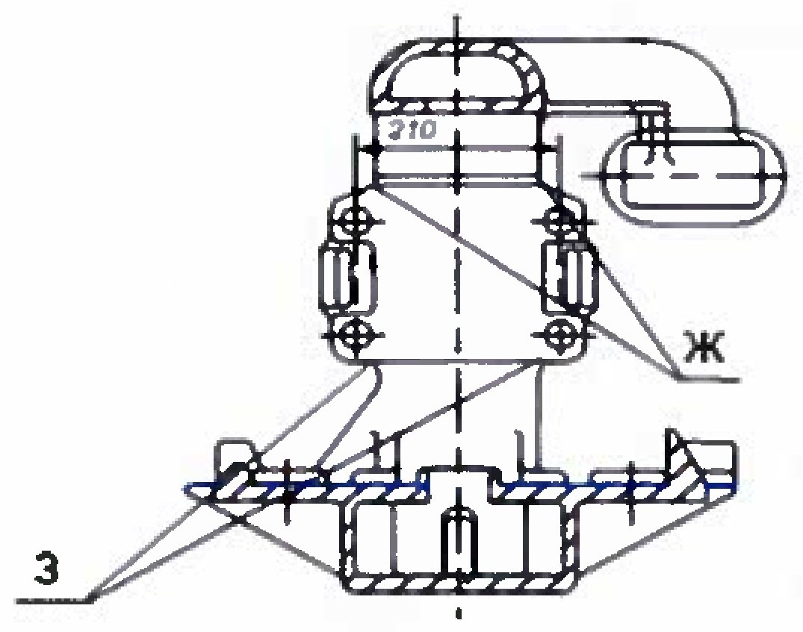
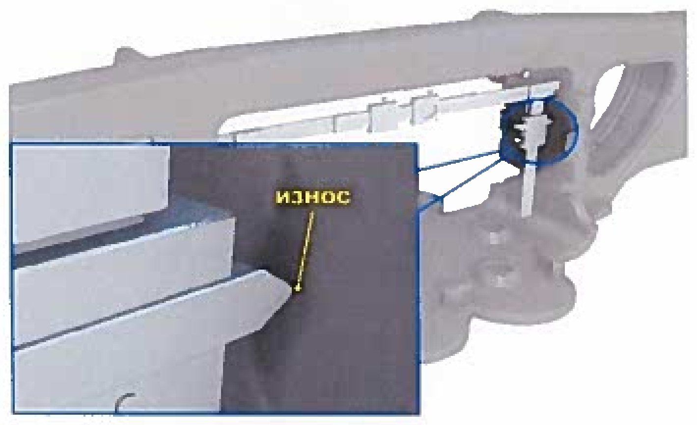
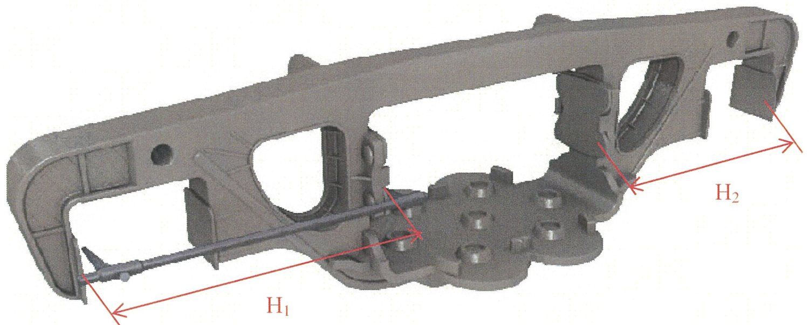
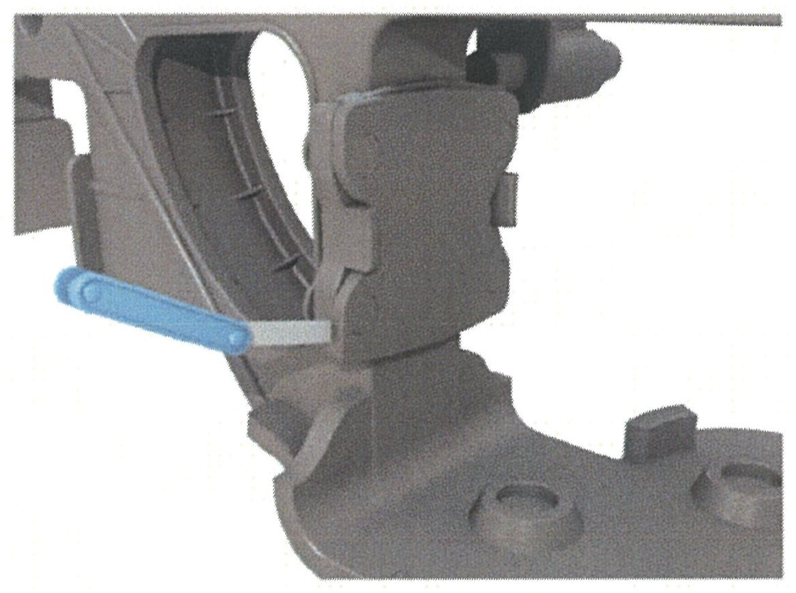
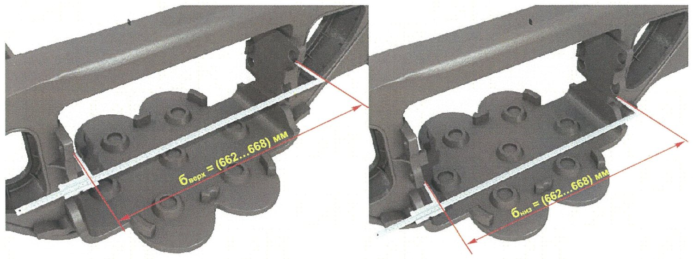
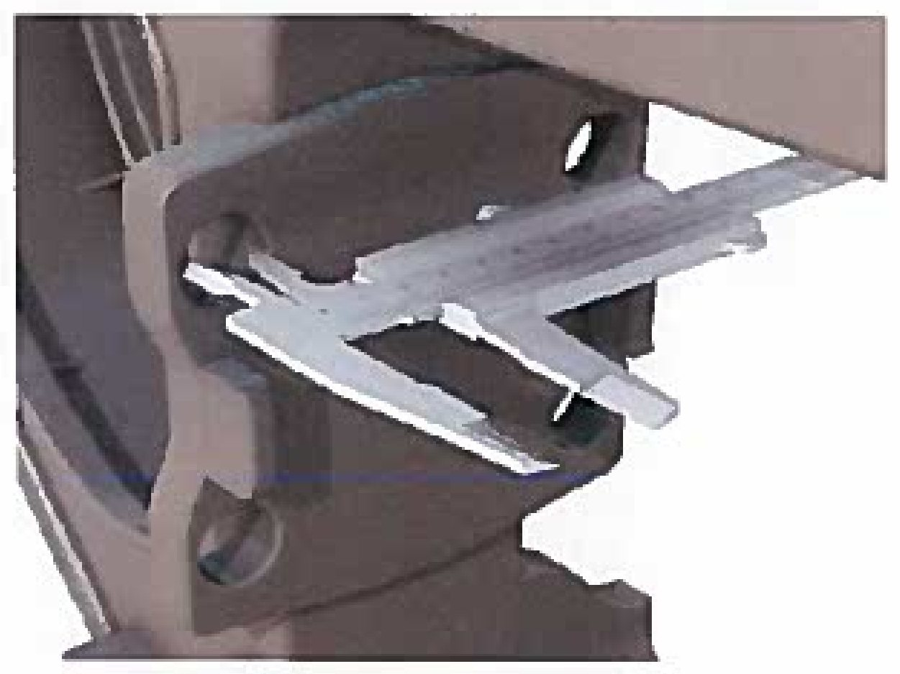

Yon rama: friksion plankalar
5.2.5–5.2.12 bandlari: «L₁» va «L₂», pastga kengayish, noparallellik, planka yeyilishi, «H₁−H₂», zich yotishi, 668₋₃ o'lchami va Ra.
Friksion planka nima qiladi
Friksion planka — yon ramaning ressor proyomiga zaklepkalangan po'lat plastina. Aynan u bilan friksion pona ishqalanadi. Plankalar juft bo'lib ishlaydi va ular orasidagi masofa so'ndirgichning kuchini belgilaydi.
5.2.5 — «L₁» va pastga kengayish

- Shtangen ФП ni shtangalari uporlari bilan ressor proyomiga plankalarning yuqori qirralari bo'yicha o'rnating.
- Shtangalarni maksimal darajada oching va stopor vint bilan qotiring.
- Ko'rsatkichni ramka shkalasidan o'qing — bu «L₁».
- O'lchashni yon ramaning tashqi va ichki tomonidan bajaring.
| Holat | «L₁» me'yori |
|---|---|
| Planka qalinligi 10 mm | 642 mm dan kam emas |
| Planka qalinligi 16 mm | 630 mm dan kam emas |
| 18-100, ramalar 2001-yildan keyin, ДР | 648 (+2,0 / −3,6) mm |
| 18-100, ramalar 2001-yildan keyin, КР | 648 (+1,6 / −3,6) mm |
| 18-100, ramalar 2001-yilgacha, ДР | 648 (+2,0 / −6,6) mm |
| 18-100, ramalar 2001-yilgacha, КР | 648 (+1,6 / −6,6) mm |

Kengayishni o'lchash uchun polzunoklar plankalarning pastki qirralariga olib kelinadi, dvijoklar yuzalarga tekkuncha ochiladi va ularning ko'rsatkichi ramka ko'rsatkichiga qo'shiladi — «L₂» olinadi.
5.2.5 — Noparallellik

Plankalar orasidagi o'lchamlar yuqorida «Ж» nuqtalarida va pastda «З» nuqtalarida o'lchanadi. Eng katta va eng kichik o'lcham farqi noparallellik kattaligini beradi.
5.2.6 — Planka yeyilishini o'lchash

Usul solishtirishga asoslangan: avval ko'rinadigan maksimal yeyilish joyida, so'ngra yeyilmagan joyda o'lchanadi; ikki ko'rsatkich farqi yeyilishni beradi.
| Planka turi | Ruxsat etilgan yeyilish |
|---|---|
| Qo'zg'almas planka, qalinligi 10 mm | 1,5 mm dan ko'p emas |
| Harakatlanuvchi plankalar — umumiy qalinlik bo'yicha | 2,0 mm dan ko'p emas |
| Harakatlanuvchi plankalar — bir tomondan | 1,5 mm dan ko'p emas |
5.2.7 — «H₁ − H₂» farqi

Qo'zg'almas oyoqcha ressor osma proyomiga kiritilib plankaning privalochniy yuzasiga bosiladi, harakatlanuvchi oyoqcha buksa proyomining tashqi yuzasiga olib kelinib vint bilan qotiriladi.
5.2.8 — Plankalarning zich yotishi

| Nazorat qilinadigan joy | Me'yor |
|---|---|
| Sopryagayemiy yuzalar orasida (zaklepkalar oralig'ida) | 1,0 mm dan ko'p emas; 18-100 uchun 0,5 mm dan ko'p emas |
| Zaklepka boshi zonasida | 1 mm li shchup (18-100 uchun 0,5 mm) zaklepka sterjeniga yetmasin; tirqish bosh aylanasining 1/3 qismidan ortiq bo'lmasin |
| Zaklepka boshining planka tekisligiga cho'kishi | 2,0 mm dan ko'p emas |
5.2.9–5.2.10 — Privalochniy yuzalar va g'adir-budurlik

| Parametr | Me'yor |
|---|---|
| Proyom o'lchami yuqori qismda | 668 (−3) mm |
| Har bir privalochniy yuzaning pastki qismidagi kengayish | 2,0 dan 5,0 mm gacha |
| G'adir-budurlik Ra | 12,5 mkm dan ko'p emas |
5.2.11–5.2.12 — Plastina va teshiklar

| Parametr | Me'yor |
|---|---|
| Yeyilishga chidamli plastinaning notekis yeyilishi | 2,0 mm dan ko'p emas |
| Friksion plankalarni o'rnatish uchun 4 ta teshik diametri | Ø 21 (+0,84) mm |
Nazorat savollari
Avval o'zingiz javob bering, so'ngra tekshiring.
1. «L₁» va «L₂» qanday farq qiladi va ular orasidagi farq nima deyiladi?
2. Planka yeyilishi qanday aniqlanadi?
3. «H₁ − H₂» ni o'lchashda qanday muhim shart bor?
4. 18-100 aravachasida plankalar orasidagi mahalliy zichmaslik 0,8 mm chiqdi. Yaroqlimi?
5. 668 (−3) mm o'lchami qachon nazorat qilinadi?
Manba: РД 32 ЦВ 050-2020 — ГОСТ 9246-2013 bo'yicha tip 2 yuk vagon aravachalarini ta'mirlashda uzel va detallar parametrlarini o'lchash metodikasi.
Andijon vagon deposi · telejka ta'mirlash sexi.